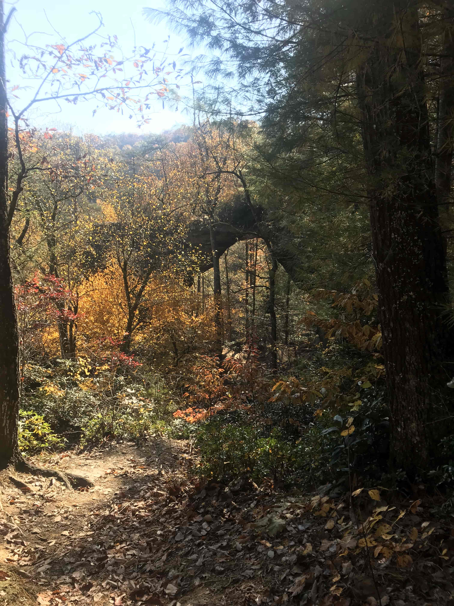
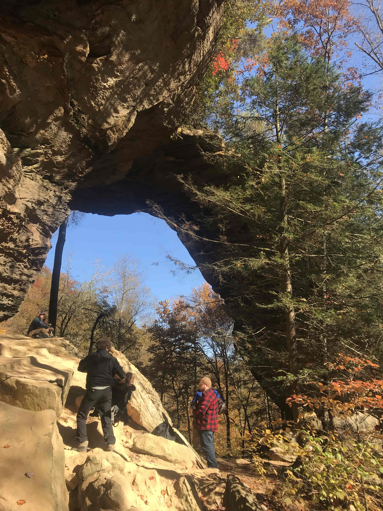

Grays Arch
Authored by: Miranda Spurgeon
Info about park...
Some notable destinations include...
Additional maps of the Red River Gorge
Additional maps of the Bluegrass

Caption
Caption
Caption



Photo of the Arch from the trail location by Miranda Spurgeon
Photo of the Arch from the other side.
3D rendor of the Arch in ArcGIS pro using LiDAR data.
Errosion of rock ajacent of grays arch
Map details
How was this map made?(PUT LINK TO PYTHON SCRIPT)
University of Kentucky GEO 409, Fall 2018.
- My Map of the Red River Gorge
- Follow me on instagram @mirandamermanda
- Visit my github page @MLSpurgeon
- UKy GIS and Mapping